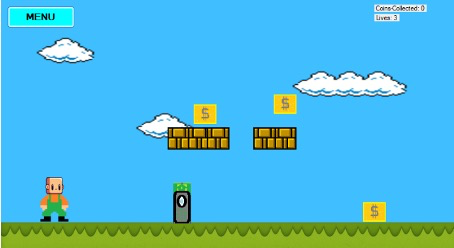
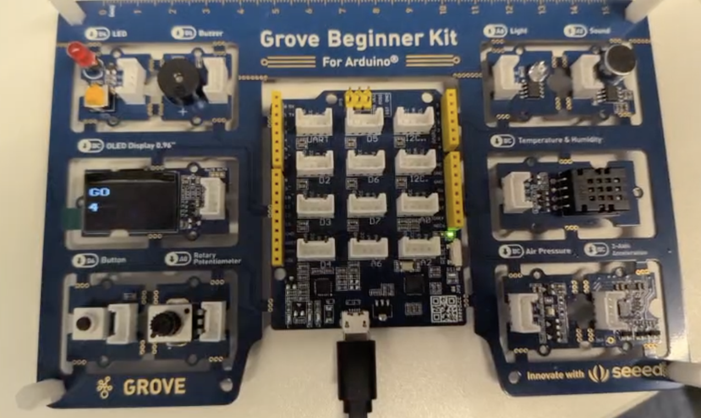

My Projects
AstonCV
PHP & MySQL Web Application

AdventureScape
Visual Basic 2D Platform Game

Arduino Project
Arduino & Sensor System
AI Search Algorithms
Python & Artificial Intelligence
AstonCV
AstonCV is a database-driven CV web application developed using PHP and MySQL. Users can register, log in and manage their own CV profile, while visitors can browse CVs, search by name or programming language, and view individual profiles.
The project uses PHP sessions for authentication, password hashing for storing passwords securely, a prepared SQL statement for login queries, and dynamic database content displayed through PHP.
Technologies: PHP, MySQL, SQL, HTML, XAMPP
Login and Authentication
A prepared SQL statement retrieves the account using the entered email. The password is then checked against the stored password hash before a session is created.
$stmt = $conn->prepare("SELECT * FROM cvs WHERE email = ?");
$stmt->bind_param("s", $email);
$stmt->execute();
$result = $stmt->get_result();
if ($result->num_rows == 1) {
$row = $result->fetch_assoc();
if (password_verify($password, $row["password"])) {
$_SESSION["user_id"] = $row["id"];
$_SESSION["user_name"] = $row["name"];
header("Location: index.php");
exit();
}
}Password Hashing
When a user registers, their password is hashed before it is stored in the database rather than storing the original password.
$password = password_hash(
$_POST["password"],
PASSWORD_DEFAULT
);Dynamic CV Display
CV information is retrieved from MySQL and PHP generates the page content from each database record.
while ($row = $result->fetch_assoc()) {
echo "<div>";
echo "<h3>" . htmlspecialchars($row["name"]) . "</h3>";
echo "<p>Email: " . htmlspecialchars($row["email"]) . "</p>";
echo "<p>Key Programming Language: "
. htmlspecialchars($row["keyprogramming"]) . "</p>";
echo "<a href='cv.php?id=" . $row["id"] . "'>View Details</a>";
echo "</div><hr>";
}AI Search Algorithms
Completed as part of a university Artificial Intelligence practical using Google Colab and Jupyter Notebook (.ipynb) files. The practical involved using Python to explore uninformed search algorithms and how they can be used to search through different states and find a solution.
I worked with Depth-First Search (DFS) and Breadth-First Search (BFS), using Python data structures such as lists, sets, dictionaries and queues. These techniques were also applied to an 8-puzzle problem, where BFS was used to search through possible puzzle states and find a path towards the solution.
Technologies: Python, Google Colab, Jupyter Notebook
Depth-First Search
DFS uses a stack to explore one path through the graph before returning to explore other paths.
def dfs(graph, start):
visited = set()
stack = [start]
while stack:
node = stack.pop()
if node not in visited:
visited.add(node)
for neighbour in graph[node]:
if neighbour not in visited:
stack.append(neighbour)
return visitedBreadth-First Search
BFS uses a queue to explore nodes level by level rather than following one path first.
from collections import deque
def bfs(graph, start):
visited = set()
queue = deque([start])
while queue:
node = queue.popleft()
if node not in visited:
visited.add(node)
for neighbour in graph[node]:
if neighbour not in visited:
queue.append(neighbour)
return visitedArduino Project
Completed as part of a university group project using an Arduino and a range of sensors and components. The project involved programming different embedded systems and displaying real-time information using an OLED display.
One task involved creating a mini weather station that measured temperature, humidity and air pressure. An adjustable temperature threshold could be set using a potentiometer, with a buzzer warning when the temperature exceeded the selected value.
Another task involved creating an automatic night-light system. An LDR measured the surrounding light level and switched an LED on when it became darker than the threshold set using a potentiometer. Sensor readings and the LED status were also displayed on an OLED screen.
Technologies: Arduino, C++, Sensors, OLED Display
Weather Station
Temperature, humidity and air pressure are read from the sensors, while the potentiometer controls the temperature warning threshold.
temperature = dht.readTemperature();
humidity = dht.readHumidity();
air_pressure = bmp280.getPressure() / 100.0;
int potentiometer = analogRead(rotaryPin);
temp_threshold = map(potentiometer, 0, 1023, 80, 20);
if (temperature > temp_threshold) {
u8x8.setCursor(0, 1);
u8x8.print("!! TOO HOT !!");
for (int count = 0; count < 5; count++) {
digitalWrite(BuzzerPin, HIGH);
delay(200);
digitalWrite(BuzzerPin, LOW);
delay(200);
}
}Automatic Night Light
The LDR measures the surrounding light level and the potentiometer sets the threshold. The LED switches on automatically when the measured light falls below it.
lightLevel = analogRead(LDR_PIN);
thresholdValue = analogRead(POT_PIN);
if (lightLevel < thresholdValue) {
digitalWrite(LED_PIN, HIGH);
} else {
digitalWrite(LED_PIN, LOW);
}AdventureScape
AdventureScape is a Super Mario Bros-inspired 2D platform game developed using Visual Basic. The game includes player movement, jumping and gravity, platform collision, animated movement, enemies that reduce the player's lives, collectible coins, and multiple levels.
Technology: Visual Basic / VB.NET
Movement and Jumping
This section handles keyboard input for moving the player left and right and starting a jump.
Select Case e.KeyCode
Case Keys.D
Player.Location = New Point(Player.X + 6, Player.Y)
Case Keys.A
Player.Location = New Point(Player.X - 6, Player.Y)
Case Keys.Space
If Not isJumping Then
isJumping = True
jumpSpeed = 10
End If
End SelectGravity and Platform Collision
The game timer updates the player's vertical movement. Jump speed decreases over time to create gravity, while collision detection checks whether the player has landed on a platform.
If isJumping Then
Player.Top -= jumpSpeed
jumpSpeed -= gravity
For Each block As PictureBox In landingBlocks
If Player.Bounds.IntersectsWith(block.Bounds) Then
isJumping = False
Player.Top = block.Top - Player.Height
gravity = 2
Exit For
End If
Next
End If